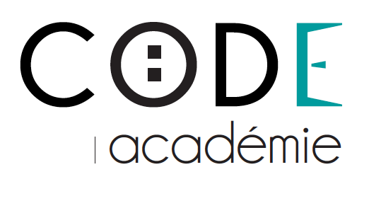

Cahier des charges
Présentation des ressources
1° L'agence et ces contributeurs
1.1 La Code academie :
La Code academie est a l'issue de l'appel a projet de la grand ecole du numerique une ecole de developpement web organisée et geré par la fondation face agir contre l'exclusion
Au seins de la grande ecole du numerique , la code academie c'est vue confier a deux de ses developpeurs le projet, qui sera presenté pour la soutenance de certification developpeur logiciel.
un développeur front-end : jonathan platon
un développeur back-end : julien vaupré
l'equipe sera chargée des differentes phases de conception et de developpement hors production
1.2 Wanalike network :
La Code academie est préstataire de service gratuit pour Wanalike dans le cadres de la certification de développeur-logiciel
Wanalike network propose differents service tel que : la conception de sites, l'hebergement , du tchat irc et des webradios.
L'entité est basée a Sainte-Trephine pour ces serveurs et a Loudeac pour les locaux de developpement
Wanalike network est composé d'un staff de 6 developpeur ainsi qu'une multitude d'utilisateurs qui on rejoint la communauté
Au sein de l'entité wanalike network, en charge initial du projet, voici les deux developpeur a qui le projet a été confier :
un developpeur full-stack: julien vaupré
un developpeur back-end: matthieu bernolin
wanalike assurera la continuité du developpement et de la mise en production ,ainsi que la garantie post dev de deux mois et les éventuels évolutions possibles du projet apres une periode de 6 mois de production .
2° Descriptif du projet
presentation du clients :
1. Informations sur le client
Nom : Société 2TECH
Projet : Gestionnaire de stocks
Auteur : Julien V, Matthieu B, Jonathan P
Destinataire : Francois LE HIREZ
Version : 1.1
Projet : Gestionnaire de stocks
Auteur : Julien V, Matthieu B, Jonathan P
Destinataire : Francois LE HIREZ
Version : 1.1
Destinataire : Francois LE HIREZ
Version : 1.1
3° fonctions de l'application
l'application est un panel de gestion de stock commandé par 2tech en remplacement de l'ancienne application ne repondant plus aux besoins actuels l'application sera utiliser par 10 employer de façon simultané en intranet au sein de l'entreprise 2tech
4°description fonctionnel
3.1 gestion des composants
le projet devra assurer la gestion des composants au seins du magasin, les fonctionnalitées d'ajout, de modifications et de suppression devront figurer sur une seul et meme page. Une fonctionnalitée permettant de consulter l'etat du stock sera mise en place via une page annexes qui comporteras un vue d'ensemble des composants présents en stock
3.2 la recherche
la fonctionnalitée de recherche est attendue néamoins les developpeurs on libre choix de l'agencement de cette fonctionnalitée
3.3 la gestion des utilisateurs
un espace permettant de ce connecter sera mis en place les utilisateurs seront enregistrer et crée par l'administeur : seul le directeurs et le chef technique possederon les droits d'administration et donc la possibilté de crée ou supprimé des utilisateurs
5° contrainte
5.1 techniques
le projet est developper pour un environement sous linux , en php a la demande du clients et un sgbd au choix
5.1.1 les choix de l'equipe
pour une meilleurs compatibilté, les developpeurs on choisit la version 7 de php ainsi que mysql pour la base de données
les tests fonctionnel seront effectuer avec phpunit
5.2 le budget
le budget pour l'achat eventuel au cours du developpement est null
tout evolution eventuel devra etre clairement specifier dans un avenant et specifier dans un temps impartit de 2 semaine au prealable
5.3 l'equipe
les ressources de l'equipe de developpement se compose de deux developpeur au seins de la code academie
Vaupré Julien : developper back-end et chargé de relations clients
Jonathan Platon: developper front-end
5.4 le temps
le client n'a pas exprimé de temps impartit une estimation initial de wanalike a été fixé a 11 semaines l'estimation par l'equipe de la code academie dans le cadre de la soutenances a été fixé a 7 semaines
5.5 charte graphiques
Aucune charte graphiques n'a été definit par le client, les choix visuel et graphique seront au libre gout des developpeurs les seuls consignes specifié par celui-ci sont :
5.5.1 simplicitée et efficacitée
La seul contrainte graphique ordonné par le clients est que l'application aient un designe simple et facile d'utilisation
5.5.2 elements necessaire a la gestion des stock sur une seul page:
ajout ,modification et suppression
un logo fournit par le clients
6° planning
integration planning7° retour attendue :
les échanges seront a interval regulier, sans date definit et dans un temps de reponse impartit d'une semaine
le cahier des charges
les specifications techniques
les specifications fonctionnels
la documentation
cas particulier: toutes modifications du cahier des charges devra etre specifier par un avenants , en accord et signé par les deux parties